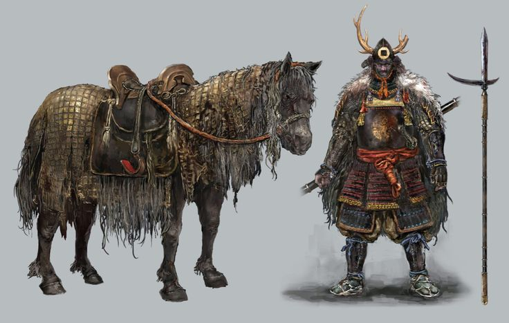
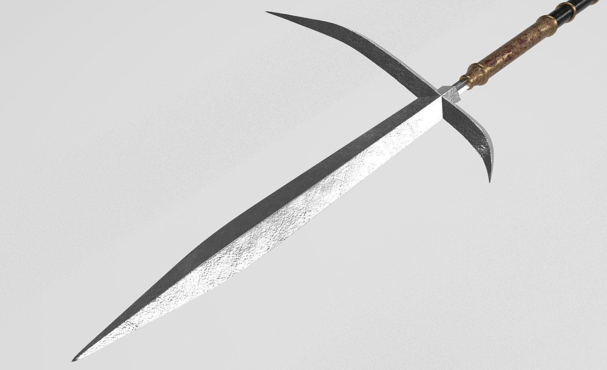
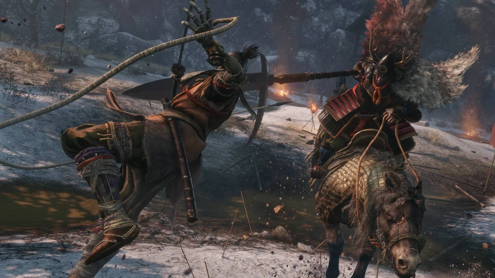

"My name is Gyoubu Masataka Oniwa! As I breathe, you will not pass the castle gate!"
Gyoubu Masataka Oniwa is, chronologically, the first boss of the game. Even though some players fight Lady Butterfly first, advancing through Hirata Estate's Memory, she is not a mandatory boss. Gyoubu is normally the first boss you will fight and, in order to advance, you will have to defeat him.
He is a ruthless, proud and ferocious fighter, known as a demon in the battlefield. He rides a warhorse named Onikage and wields a massive cross-bladed spear (Katakama-yari). The quote above is his iconic speech.

Gyoubu and OnikageGyoubu's pride has a reason in the lore. When Wolf enters the battlefield, he appears riding Onikage and proclaims that as he breathes, we will not pass the castle gate. His source of pride does not come within him, but under the flag of Ashina.
Before joining the Ashina Clan, Gyoubu was the infamous leader of a group of bandits. During a rebellion, he fought against Isshin and, as expected, he lost. Impressed by Gyoubu's raw strength and skill, Isshin spared him and brought him into the service of the Ashina clan as an Ashina Warrior.
The cross-bladed spear that he wields once belonged to General Shuzen Tamura, an Isshin's rival. The Sword Saint gifted him with the weapon. His aggressiveness may entitle him as a demon, but deep inside Gyoubu is just an honorable man fighting for what he believes.

Katakama-yariGyoubu is not that challenging. In fact, he is one of the easiest bosses. His agressiveness and inflated ego may scare at first, but you can make the fight easier by using the Shinobi Firecracker to scare his horse, giving you a window of two seconds to deal some damage.
The majority of his attacks are very telegraphed and easy to deflect. Whenever a green grapple icon appears over his head, you can instantly pull yourself right to him to land free hits and interrupt his momentum. Do not miss those opportunities when fighting him.
Overall, if we use Tier-List metrics to decide how difficult this boss is, it would be a solid C. Definitely not the easiest of them all, but quite far to be one of the hardest. Keep calm, deflect, scare his horse with the firecracker and you will easily defeat the first mandatory boss of the game.

Sekiro vs Gyoubu Oniwa